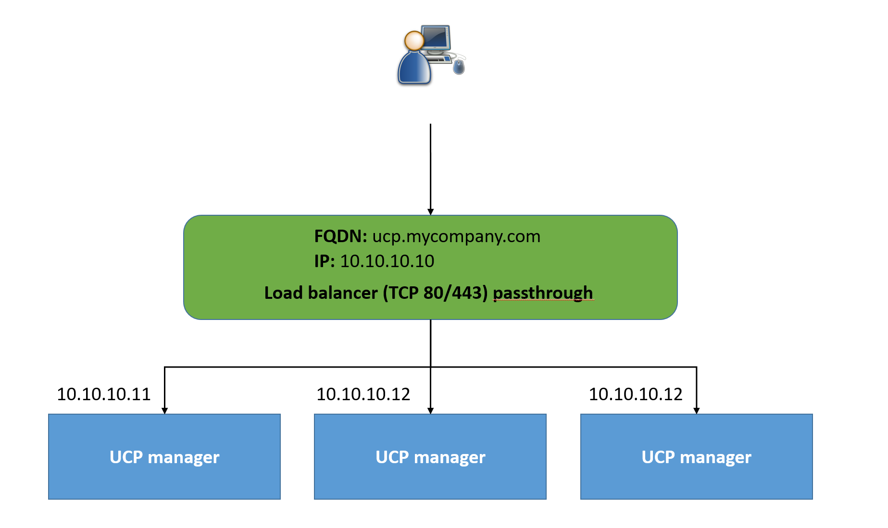

Mini lecture: UCP high availability
Mini lecture: UCP high availability
Multiple manager nodes
- Running multiple manager nodes increases the fault tolerance of your cluster
- If one manager fails, another will take its place
- Can also load balance user requests across manager nodes
Fault tolerance
- Adding more manager nodes increase the fault tolerance of your cluster
- Downside is performance degradation
- Must always have an odd number of managers
- If a manager node goes down, try to bring it back up ASAP
- Try to distribute managers across availability zones. That way if an entire zone goes down, the cluster can still continue working.
How many managers ?
| Number of manager nodes |
Failures tolerated |
| 1 |
0 |
| 3 |
1 |
| 5 |
2 |
| 7 |
3 |
| N |
(N-1) / 2 |
- Note: Having a 3 manager node setup does not provide true failover
Load balancing managers
- If you have DNS configured to one particular UCP manager node and that node goes down, you won't be able to access UCP
- To solve this problem, put a load balancer in front
- Load balancer configuration
- Load balance traffic on ports 80 and 443
- Don't terminate HTTPS connections as UCP uses mutual TLS
- Use the
/_ping endpoint on each manager node to check if it's heathly and if it should remain in the load balancing pool
Load balancing example
